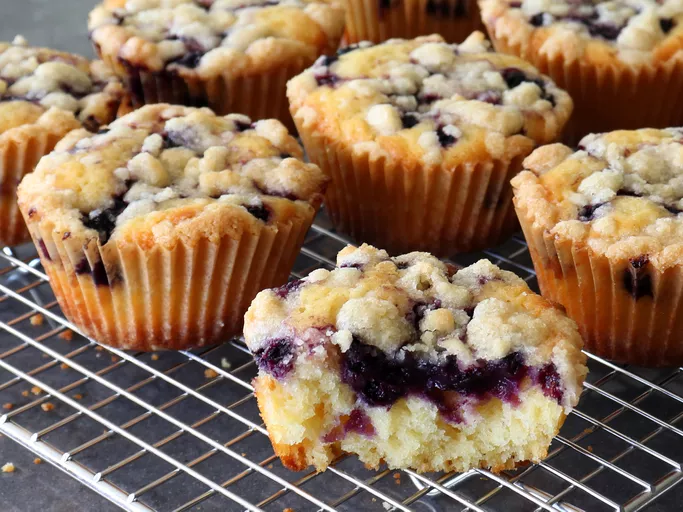

Blueberry Lemon Crumb Cakes

Blueberry Lemon Crumb Cake Ingredients
Crumb Topping
- 1/4 cup unsalted butter, softened
- 1/8 teaspoon salt
- 1/3 cup all-purpose flour
- 1/4 cup white sugar
- 1 tablespoon brown sugar
Batter
- 1 1/3 cups all-purpose flour
- 1 teaspoon kosher salt
- 1 teaspoon baking powder
- 1/4 teaspoon baking soda
- 1/2 cup white sugar
Directions
Step 1
- Combine 1/4 cup butter, 1/8 teaspoon salt, 1/3 cup flour, 1/4 cup white sugar, and 1 tablespoon brown sugar
in a small bowl. Mash together with the back of a spoon until uniformly combined. Chill in the refrigerator
until firm, about 30 minutes. Once cold, crumble into pea-sized crumbs, and return to the refrigerator until
needed.
Step 2
- Whisk together 1 1/3 cup flour, 1 teaspoon salt, baking powder, and baking soda in a bowl; set aside.
Step 3
- Add 1/2 cup white sugar, 2 tablespoons brown sugar, and lemon zest to a large bowl; stir and let sit for 20
to 30 minutes.
Step 4
- Preheat the oven to 375 degrees F (190 degrees C). Grease a 12-cup muffin tin or line cups with paper
liners.
Step 5
- Add butter to the bowl with lemon zest. Beat with an electric hand mixer or whisk until light and fluffy.
Beat in eggs one at a time. Add vanilla extract, yogurt, and lemon juice, and mix briefly to just combine.
If mixture separates, it will come back together when you add dry ingredients.
Step 6
- Add flour mixture, and blend just until flour disappears
Step 7
- Divide batter equally between the prepared muffin cups. Top each cake with a heaping teaspoon of
blueberries, and lightly press berries down in the center. Divide crumb mixture evenly over cakes.
Step 8
- Bake in the preheated oven until golden brown and a skewer inserted near the center comes out clean, about
25 minutes. Cool in the pan for 10 to 15 minutes before removing to a wire rack. Cool crumb cakes completely
before serving.
Back